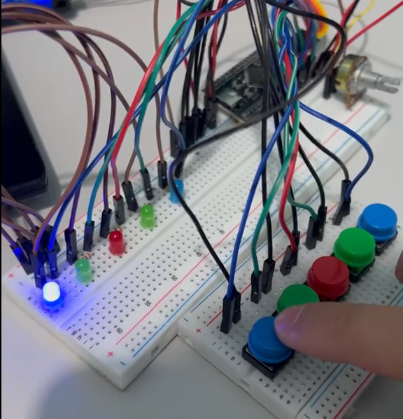

STM32 Mini Project

An STM32-based reaction game featuring 5 LEDs and 5 buttons. Players must press the matching button when an LED lights up randomly. A potentiometer adjusts the reaction time, and 3 missed attempts trigger a game over.
Visit Project